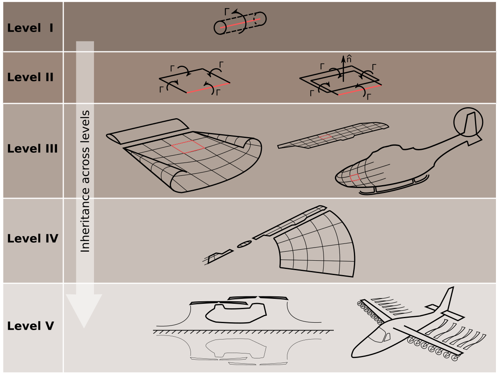

The vortex lattice method is a potential flow based method. While different flavours exist, the one implemented here is a lifting surface model with a free-wake formulation. To keep the solver generalized, the flow solution is obtained in the global frame. Details on this specific implementation of the vortex lattice method are available in the following references:
The code is centered around the object-oriented philosophy and is built up using a hierarchical model as shown in the figure. Vortex filaments are used to contstruct wing and wake ring elements. These are further used to construct wing and wake 'sheets' which make up larger aircraft configurations. Ever geometry is assumed to be a rotor at first. For example, a fixed-wing is a non-rotating single-bladed rotor. This rather unorthodox terminology was adopted for the sake of generalization during the initial phases of development.

The Fortran source files are present in the src/ folder.
main.f90 drives the solver and general program flow. classdef.f90 contains attribute and method definitions for the various abstract data types. libCommon.f90 contains subroutines that work on higher-level objects and those that deal with general bookkeeping. libPostProcess.f90 contains post-processing and data write-out subroutines. libMath.f90 is an independent math library that contains operations on vectors and matrices. libC81.f90 deals with handling C81 airfoil files and is an independent library. gridgen.90 converts results from the Lagrangian to an Eulerian framework to better plot pressure and velocity fields on a traditional CFD-like domain.Data input to the solver is through the files config.nml and geom01.nml which are in namelist format. Namelist files are a Fortran specific ASCII input format that follow a variable name-value ordering. Use the provided script newcase.sh to generate templates of these files.
A few utility codes are provided in tools/ to make plotting and parsing of results easier.
The solver has the following dependencies:
The source files utilize a CMake build system. Follow the steps below to generate the volcanor executable.
git clone git@github.com:cibinjoseph/VOLCANOR.gitbuild/ directory in the topmost folder VOLCANOR/.build/.cmake from this directory pointing to the directory one level below. This will generate a Makefile for your OS and available compiler.make volcanor to compile all source files and generate the volcanor executable in the bin/ folder. Note that the environment variable OMP_NUM_THREADS should be set to the required number of parallel processes to utilize parallelization.On a Linux system with Intel Fortran installed, this is achieved using the following commands.
mkdir build
cd build/
FC=ifort cmake ..
make volcanor